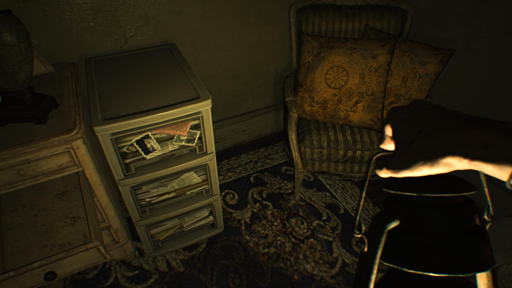
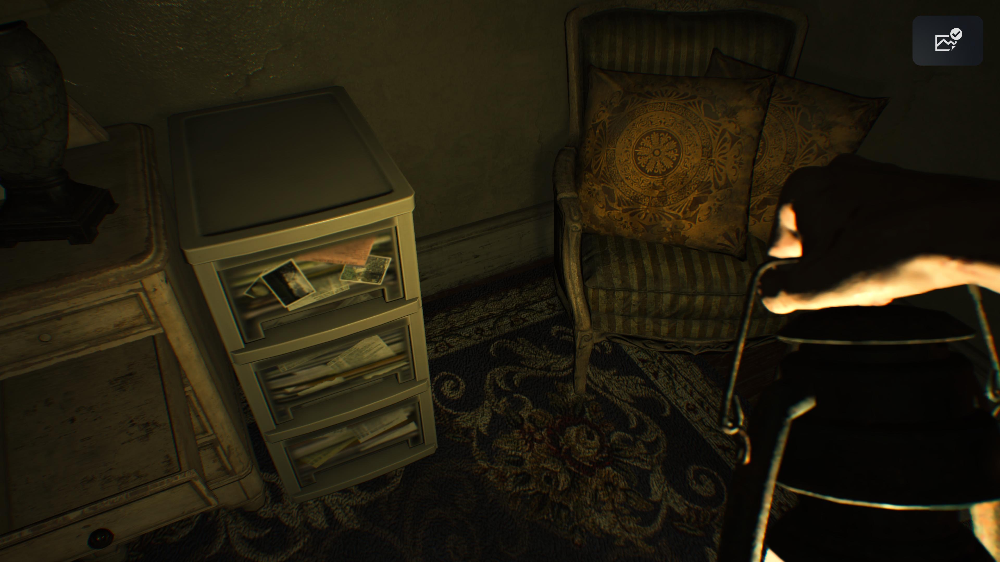
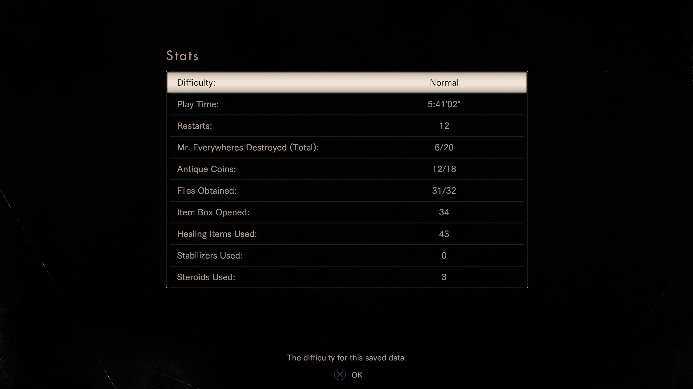
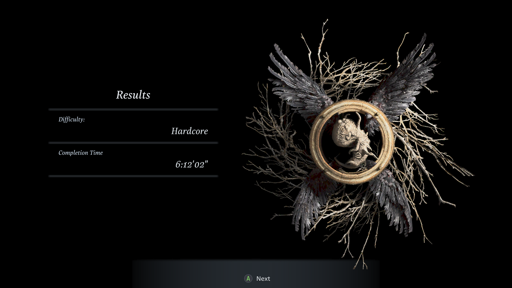
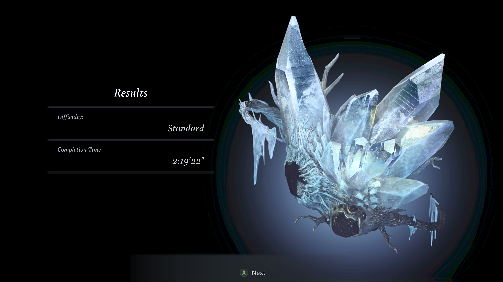
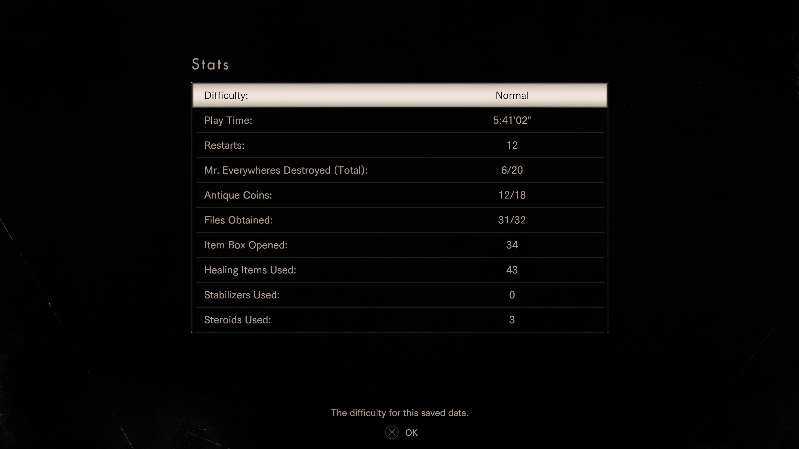
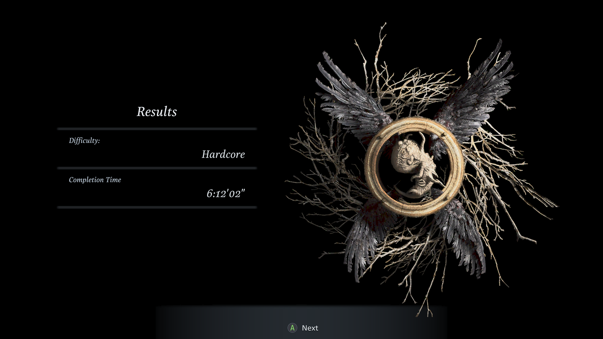
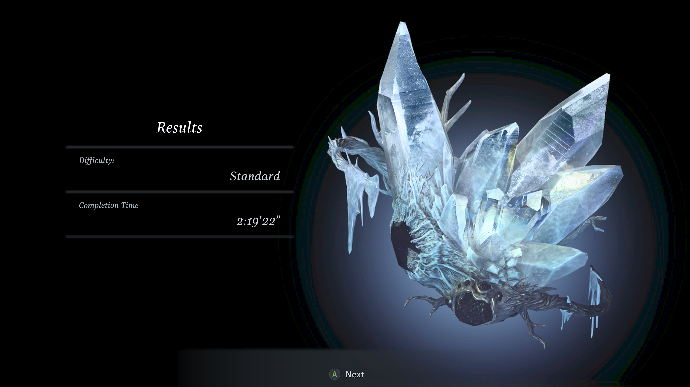

1game1week - Week 5 and Week 6 (2/14/26) - Resident Evil VII and Resident Evil Village
Hey all! I'm still behind on posts so figured I'd just write a post for two weeks because they're thematically linked anyway! (1/29 -> 2/5 and 2/5 -> 2/12) You'll be able to see it below in the new games list, but I finally bought a game this year. It was more so a stowaway, because it came included with a Super Famicom I bought. I've gotta say, those purchasing rules for games that I set for myself really were a good idea. Compared to last year, by this time I had already bought something like sixteen games compared to the one for this year. It's both a good deterrent and a good way of balancing out my backlog. Truly, 2026 is the year of the backlog. You know, I watched a video pretty recently about the way hobbies have been becoming performative in social media. It specifically targeted coloring books (lol?) and BookTok, noting that there's a huge overconsumption problem and weird quotas for reading a specific amount of books per year. It highlighted that the hobby became (or, was portrayed as) less about the hobby itself, in this scenario reading, and more about the aforementioned arbitrary quotas or about buying, again in this scenario, books. The video cites various influencers saying something about having to read a hundred books per year, and it's apparently a big-ish thing. It just made me wonder if 1g1w is halfway there to the same vein where it's less about playing the game, and more about just playing more videogames, if that makes sense. Quantity over quality, if you will. Weirdly enough, I do feel I "neglect" some games that I'm interested in completing or spending more time with simply because of 1g1w and not having "enough time" to get to spend more time with the game I want to. Signalis, for example, has incredibly rich lore that I just kind of glossed over. Kanon, too. The game has five routes and I just read one. I suppose I feel I'm not spending "enough" time with these games. But "enough" is an incredibly dubious amount. I mean, it's not like I'm just picking mindless, short games. Nowadays, I'm very definitely not buying games willy nilly. I put a lot of thought into the games I play / buy nowadays and writing about them makes me feel a little more tied to what I played. The conclusion I kind of came to was that I play games because they're enjoyable, and I write because it's enjoyable. I'm not an influencer, I don't intend to be, and I don't want to be. 1g1w is an incentive for me to spend time with my main hobby in a sea of things to do and dooms to scroll. Definitely made me think a bit, though. I try to be mindful of the stuff I play / buy / write. Anyways...New games from 1/29 -> 2/4: None! (Total 5) New games from 2/5 -> 2/11: Dragon Quest V (JP) (Super Famicom)
As of 2/14, my yearly backlog is at -13 (lower is better, -2 since last week). And onto 1g1w. A game is considered "beaten" if I've accomplished the main objective of the game, regardless of how many routes / endings I've achieved. However, it's preferable to get all endings if possible! GAME(S): Resident Evil VII with DLC / Resident Evil Village with DLC PLATFORM: PS5 / Xbox Series X GENRE: Survival Horror STARTED ON: 1/26 and 2/9 BEATEN ON: 1/28 and 2/10 TOTAL PLAYTIME: 13 hours and 36 minutes (Tracked via PSTimeTracker) / 15 hours and 23 minutes (Tracked via Xbox) In the spirit of Resident Evil requiem releasing later this month, I decided to finally play Resident Evil 7 and 8. Some of the people who've known me for a while may think, "hey, wasn't RE7 1g1w 2022 Week 40?" Yeah. It was. I just never actually finished it. If I recall correctly, I just got as far as getting the shotgun which is realistically an hour or so into the game, and then never touched it again. It was also a PlayStation Plus game so once my subscription ran out, I lost access to it. I bought a Gold Edition physical copy in 2023 for PS4 with (almost) all the DLC included in the disc, so it's been sitting in my backlog for a little while. Man... I regret letting it fester there, because it was really well done and very likely my favorite RE Engine game so far. In both of these games, something that really tickled me was that each... "area boss", for lack of a better way of putting it, follows a specific type of horror tropes which makes them feel unique in their direction and the way the game spooks you. In the case of RE7, Jack Baker followed classic slasher trope. Marguerite followed a body horror trope with her boss transformation. Lucas was a trapped-house villain, similar to something like Jigsaw. These trends followed in RE8, with Lady Dimitrescu being very blatantly inspired by vampire flicks. I've made the point, but it truly was a treat the games left behind. While playing RE7, I noticed quite a bit of low-res assets being used when the player is not expected to be able to see them. This is obviously a dev trick to save a bit of memory, but I felt a little strange because I was playing through backwards-compatibility on PS5. Surely, the hardware would be able to switch resources faster... right?   It made me feel really silly later, though. It turns out having a physical copy, even of this edition, entitled me to a free download of the PS5 version that allows me to use my PS4 disc. Unfortunately, I found that out pretty much by the time I was almost done with the DLC. This would've probably made my problems with both loading in assets and the checkerboard dithering for shadows go away and made for a nicer experience. It's a shame that Sony doesn't really tell you those options are there! Speaking of the DLC, I thought it was phenomenal and made for very entertaining in-universe (and apparently canon?) scenarios that did a very good job of providing an experience unique from the main game, with my favorite probably being Bedroom, which was an Escape Room-esque scenario. 21, which is just Blackjack, was also really entertaining, but that's just... you know, it's just Blackjack. End of Zoe was really well done. Literally punching the hell out of monsters gave me such a good laugh. I thoroughly enjoyed RE7, its scenario, and its DLC stories. The only thing I'm left thinking, "man, I wish I could..." is VR support. The PS5 version does not have PSVR2 support, but the PS4 version does support PSVR, which is usable on PS5! I would love to experience it like that, just for fun.
 Since I was pretty fresh off playing RE7 when I started RE8, I decided to play on Hardcore. It definitely made me take a little while longer. Unfortunately, I wasn't quite expecting lycans (the main mob enemy in the game) to have such large health pools. Even in something like hardcore for RE2R or RE3R, critical hits or stunning with just a few hits is very common. With RE8 in this difficulty, it legitimately felt like Lycans lived forever.
One of the first "tense" moments of the game has you fight *one*, and I died a few times in there. I ended up becoming pretty annoyed, but I'm stubborn, so I didn't turn down the difficulty. Weirdly enough, that was probably the hardest segment of the entire game and I wish I was kidding.
Somehow, I think I just didn't enjoy RE8 as much as other RE Engine games. I know it sounds ricidulous to say in a franchise with zombies and random parasites and mind control bullcrap, but I thought some of the things in 8 felt a little too farfetched. Particularly, I'm thinking of Heisenberg (lol) having a big old hammer he just assembles with magnetism magic as if he was Magneto.
Again... it sounds ridiculous, because at the end of the day, RE is one of those franchises where you really, really, really need to suspend your disbelief already. I like to just say "accept the chuuni" for it. There's just always a... layer of things being grounded. Things in these games come down to "well the virus lets you do that" or "well Chris worked really hard to punch that boulder".
Since I was pretty fresh off playing RE7 when I started RE8, I decided to play on Hardcore. It definitely made me take a little while longer. Unfortunately, I wasn't quite expecting lycans (the main mob enemy in the game) to have such large health pools. Even in something like hardcore for RE2R or RE3R, critical hits or stunning with just a few hits is very common. With RE8 in this difficulty, it legitimately felt like Lycans lived forever.
One of the first "tense" moments of the game has you fight *one*, and I died a few times in there. I ended up becoming pretty annoyed, but I'm stubborn, so I didn't turn down the difficulty. Weirdly enough, that was probably the hardest segment of the entire game and I wish I was kidding.
Somehow, I think I just didn't enjoy RE8 as much as other RE Engine games. I know it sounds ricidulous to say in a franchise with zombies and random parasites and mind control bullcrap, but I thought some of the things in 8 felt a little too farfetched. Particularly, I'm thinking of Heisenberg (lol) having a big old hammer he just assembles with magnetism magic as if he was Magneto.
Again... it sounds ridiculous, because at the end of the day, RE is one of those franchises where you really, really, really need to suspend your disbelief already. I like to just say "accept the chuuni" for it. There's just always a... layer of things being grounded. Things in these games come down to "well the virus lets you do that" or "well Chris worked really hard to punch that boulder".
 The DLC was pretty interesting. I probably didn't care as much about it as the RE7 DLC. It was essentially an epilogue that revisits some of the original game's settings, with a few different puzzles and puzzle mechanics.
It went a tiny bit deeper into the lore of the game, but didn't really go into anything that was particularly groundbreaking. Just introducing the player into the playstyle of a different character (and forcing you to play in third person, unlike the main campaign)
All in all, I thoroughly enjoyed my time with both RE7 and RE8. Aside from a few hiccups, they were incredibly fun games and I'm really looking forward to playing Requiem.
Results screens are:



Thanks for reading! If you need to contact me for any reason, please feel free to email me at aru@hoshikawa-aru.com.
The DLC was pretty interesting. I probably didn't care as much about it as the RE7 DLC. It was essentially an epilogue that revisits some of the original game's settings, with a few different puzzles and puzzle mechanics.
It went a tiny bit deeper into the lore of the game, but didn't really go into anything that was particularly groundbreaking. Just introducing the player into the playstyle of a different character (and forcing you to play in third person, unlike the main campaign)
All in all, I thoroughly enjoyed my time with both RE7 and RE8. Aside from a few hiccups, they were incredibly fun games and I'm really looking forward to playing Requiem.
Results screens are:



Thanks for reading! If you need to contact me for any reason, please feel free to email me at aru@hoshikawa-aru.com.